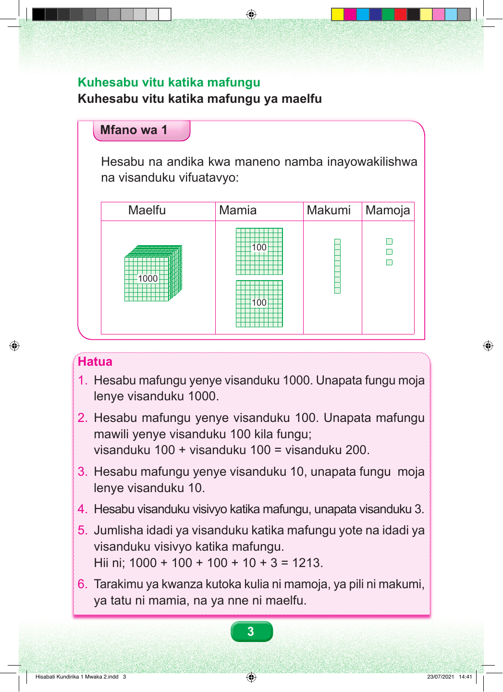

Kuhesabu vitu katika mafungu Kuhesabu vitu katika mafungu ya maelfu Mfano wa 1 Hesabu na andika kwa maneno namba inayowakilishwa na visanduku vifuatavyo: Maelfu Mamia Makumi Mamoja 100 1000 100 Hatua 1. Hesabu mafungu yenye visanduku 1000. Unapata fungu moja lenye visanduku 1000. 2. Hesabu mafungu yenye visanduku 100. Unapata mafungu mawili yenye visanduku 100 kila fungu; visanduku 100 + visanduku 100 = visanduku 200. 3. Hesabu mafungu yenye visanduku 10, unapata fungu moja lenye visanduku 10. 4. Hesabu visanduku visivyo katika mafungu, unapata visanduku 3. 5. Jumlisha idadi ya visanduku katika mafungu yote na idadi ya visanduku visivyo katika mafungu. Hii ni; 1000 + 100 + 100 + 10 + 3 = 1213. 6. Tarakimu ya kwanza kutoka kulia ni mamoja, ya pili ni makumi, ya tatu ni mamia, na ya nne ni maelfu. 3 Hisabati Kundirika 1 Mwaka 2.indd 3 23/07/2021 14:41